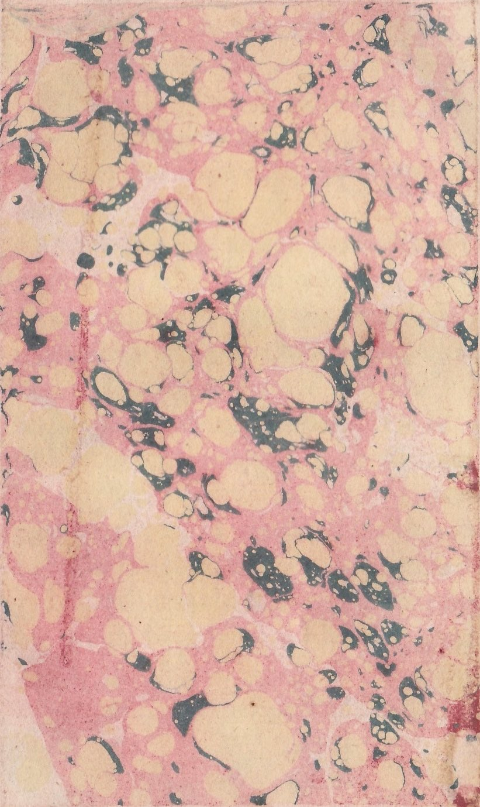

[ 160 ]
|
ing my father stood up for all his opi- nions : he had spared no pains in pick-0 ing them up, and the more they lay out of the common way, the better still was his title. ---- No mortal claim'd them : they had cost him moreover as much la- bour in cooking and digesting as in the case above, so that they might well and truely be said to be of his own goods and chattles. ---- Accordingly he held fast by 'em, both by teeth and claws, ---- would fly to whatever he could lay his hands on, ---- and in a word, would intrench and fortify them round with as many cir- cumvallations and breast-works, as my uncle Toby would a citadel. There was one plaguy rub in the way of this, ---- the scarcity of materials to make any thing of a defence with , in case of |
[ 161 ]
|
of a smart attack ; inasmuch as few men of great genius had exercised their parts in writing books upon the subject of great noses : by the trotting of my lean horse, the thing is incredible ! and I am quite lost in my understanding when I am considering what a treasure of pre- cious time and talents together has been wasted upon worse subjects, ---- and how many millions of books in all languages, and in all possible types and bindings, have been fabricated upon points not half so much tending to the unity and peace- making of the world. What was to be had, however, he set the greater store by ; and though my father would oft- times sport with my uncle Toby's li- brary, ---- which, by the bye, was ridi- culous enough, -- yet at the very same time he did it, he collected every book VOL. III. L and |
[ 162 ]
|
and treatise which had been systematically wrote upon noses, with as much care as my honest uncle Toby had done those up- on military architecture. ---- 'Tis true, a much less table would have held them, -- but that was not thy transgression, my dear uncle. ---- Here, ---- but why here, ---- rather than in any other part of my story, ---- I am not able to tell ; ---- but here it is, ---- my heart stops me to pay to thee, my dear uncle Toby, once for all, the tribute I owe thy goodness. ---- Here let me thrust my chair aside, and kneel down upon the ground, whilst I am pouring forth the warmest sentiments of love for thee, and veneratlon for the excellency of thy character, that ever virtue and nature kindled in a nephew's |
[ 163 ]
|
nephew's bosom. ------ Peace and com- fort rest for evermore upon thy head ! -- Thou envied'st no man's comforts, ---- insulted'st no man's opinions. ---- Thou blackened'st no man's character, ------ devoured'st no man's bread : gently with faithful Trim behind thee, didst thou amble round the little circle of thy pleasures, jostling no creature in thy way ; ---- for each one's service, thou hadst a tear, ---- for each man's need, thou hadst a shilling. Whilst I am worth one, to pay a weeder, ---- thy path from thy door to thy bowling green shall never be grown up. ---- Whilst there is a rood and a half of land in the Shandy family, thy fortifications, my dear uncle Toby, shall never be demolish'd. L 2 C H A P. |
[ 164 ]
|
MY father's collection was not great, but to make amends, it was curi- ous ; and consequently, he was some time in making it; he had the great good for- tune however to set off well, in getting Bruscambille's prologue upon long noses, almost for nothing, -- for he gave no more for Bruscambille than three half crowns ; owing indeed to the strong fancy which the stall-man saw my father had for the book the moment he laid his hands upon it. ---- There are not three Bruscambilles in Christendom, ---- said the stall-man, except what are chain'd up in the libraries of the curious. My father flung down the mo- ney as quick as lightning, -- took Brus- cambille into his bosom, ---- hyed home from |
[ 165 ]
|
from Piccadilly to Coleman-street with it, as he would have hyed home with a treasure, without taking his hand once off from Bruscambille all the way. To those who do not yet know of which gender Bruscambille is, ---- inasmuch as a prologue upon long noses might easily be done by either, ---- 'twill be no objection against the simile, -- to say, That when my father got home, he solaced himself with Bruscambille after the manner, in which, 'tis ten to one, your worship solaced your- self with your first mistress, ---- that is, from morning even unto night : which by the bye, how delightful soever it may prove to the inamorato, -- is of little, or no en- tertainment at all, to by-standers, -- Take notice, I go no farther with the simile, -- my father's eye was greater than his L 3 appetite, |
[ 166 ]
|
appetite, -- his zeal greater than his know- ledge, --- he cool'd --- his affections be- came divided, ---- he got hold of Prig- nitz, -- purchased Scroderus, Andrea Paræ- us, Bouchet's Evening Conferences, and above all, the great and learned Hafen Slawkenbergius ; of which, as I shall have much to say by and bye, ---- I will say nothing now. OF all the tracts my father was at the pains to procure and study in sup- port of his hypothesis, there was not any one wherein he felt a more cruel disap- pointment at first, than in the celebrated dialogue between Pamphagus and Cocles, written by the chaste pen of the great and venerable Erasmus, upon the various uses and |
[ 167 ]
|
and seasonable applications of long noses. ---- Now don't let Satan, my dear girl, in this chapter, take advantage of any one spot of rising-ground to get astride of your imagination, if you can any ways help it; or if he is so nimble as to slip on, ---- let me beg of you, like an un- back'd filly, to frisk it, to squirt it, to jump it, to rear it, to bound it, -- and to kick it, with long kicks and short kicks, till like Tickletoby's mare, you break a strap or a crupper, and throw his worship into the dirt. ------ You need not kill him. ---- ---- And pray who was Tickletoby's mare ? -- 'tis just as discreditable and un- scholar-like a question, Sir, as to have asked what year (ab urb. con.) the second Punic war broke out. -- Who was Tickle- L 4 |
[ 168 ]
|
toby's mare ! -- Read, read, read, read, my unlearned reader ! read, -- or by the know- ledge of the great saint Paraleipomenon -- I tell you before-hand, you had better throw down the book at once; for without much reading, by which your reverence knows, I mean much knowledge, you will no more be able to penetrate the moral of the next marbled page (motly emblem of my work !) than the world with all its sagacity has been able to un- raval the many opinions, transactions and truths which still lie mystically hid under the dark veil of the black one. C H A P. |
[ 169 ]
|
 |
[ 170 ]
 |
[ 171 ]
|
``NIHIL me poenitet hujus nasi,'' quoth Pamphagus ; -- that is, ---- `` My nose has been the making of me.' ---- `` Nec est cur poeniteat,'' replies Cocles; that is, `` How the duce should such a nose fail?'' The doctrine, you see, was laid down by Erasmus, as my father wished it, with the utmost plainness ; but my father's dis- appointment was, in finding nothing more from so able a pen, but the bare fact it- self; without any of that speculative sub- tilty or ambidexterity of argumentation upon it, which heaven had bestow'd upon man on purpose to investigate truth and fight for her on all sides. ---- My father pish'd and pugh'd at first most terribly, -- 'tis worth something to have a good name. As the dialogue was of Erasmus, my father soon came to himself, and read it |
[ 172 ]
|
it over and over again with great appli- cation, studying every word and every syllable of it thro' and thro' in its most strict and literal interpretation, -- he could still make nothing of it, that way. May- haps there is more meant, than is said in it, quoth my father. -- Learned men, bro- ther Toby, don't write dialogues upon long noses for nothing. ---- I'll study the mystic and the allegoric sense, ---- here is some room to turn a man's self in,brother. My father read on. ------ Now, I find it needful to inform your reverences and worships, that besides the many nautical uses of long noses enume- rated by Erasmus, the dialogist affirmeth that a long nose is not without its domes- tic conveniences also, for that in a case of distress, -- and for want of a pair of bel- lows, it will do excellently well,ad excitan- dum focum, (to stir up the fire.) Nature |
[ 173 ]
|
Nature had been prodigal in her gifts to my father beyond measure, and had sown the seeds of verbal criticism as deep with- in him, as she had done the seeds of all other knowledge, -- so that he had got out his penknife, and was trying experiments upon the sentence, to see if he could not scratch some better sense into it. -- I've got within a single letter, brother Toby, cried my father, of Erasmus his mystic mean- ing. -- You are near enough, brother, re- plied my uncle, in all conscience. ------ Pshaw ! cried my father, scratching on, -- I might as well be seven miles off. -- I've done it, ---- said my father, snapping his fingers. -- See, my dear brother Toby, how I have mended the sense. -- But you have marr'd a word, replied my uncle Toby. -- My father put on his spectacles, -- bit his lip, -- and tore out the leaf in a passion. C H A P. |
[ 174 ]
|
O Slawkenbergius ! thou faithful ana- lyzer of my Disgrázias, ---- thou sad foreteller of so many of the whips and short turns, which in one stage or other of my life have come slap upon me from the shortness of my nose, and no other cause, that I am conscious of. ---- Tell me, Slawkenbergius ! what secret impulse was it ? what intonation of voice ? whence came it ? how did it sound in thy ears ? -- art thou sure thou heard'st it ? -- which first cried out to thee, -- go, -- go, Slaw- kenbergius ! dedicate the labours of thy life, -- neglect thy pastimes, -- call forth all the powers and faculties of thy nature, ---- macerate thyself in the service of mankind, and write a grand FOLIO for them, upon the subject of their noses. How |
[ 175 ]
|
How the communication was conveyed into Slawkenbergius's sensorium, ---- so that Slawkenbergius should know whose finger touch'd the key, ---- and whose hand it was that blew the bellows, ---- as Hafen Slawkenbergius has been dead and laid in his grave above fourscore and ten years, ---- we can only raise conjectures. Slawkenbergius was play'd upon, for aught I know, like one of Whitfield's disciples, ---- that is, with such a distinct intelligence, Sir, of which of the two masters it was, that had been practising upon his instrument, ---- as to make all reasoning upon it needless. ---- For in the account which Hafen Slawkenbergius gives the world of his mo- tives and occasions for writing, and spending so many years of his life upon this |
[ 176 ]
|
this one work -- towards the end of his prolegomena, which by the bye should have come first, ---- but the bookbinder has most injudiciously placed it betwixt the analitical contents of the book, and the book itself, ---- he informs his reader, that ever since he had arrived at the age of discernment, and was able to sit down coolly, and consider within himself the true state and condition of man, and dis- tinguish the main end and design of his being ; ---- or, ---- to shorten my trans- lation, for Slawkenbergius's book is in Latin, and not a little prolix in this pas- sage, ---- ever since I understood, quoth Slawkenbergius, any thing, ---- or rather what was what, --- and could perceive that the point of long noses had been too loosely handled by all who had gone be- fore ; ---- have I, Slawkenbergius, felt a strong impulse, with a mighty and an un- resistible |
[ 177 ]
|
resistible call within me, to gird up my- self to this undertaking. And to do justice to Slawkenbergius, he has entered the list with a stronger lance, and taken a much larger career in it, than any one man who had ever entered it before him, ---- and indeed, in many re- spects, deserves to be en-nich'd as a proto- type for all writers, of voluminous works at least, to model their books by, ---- for he has taken in, Sir, the whole subject, -- examined every part of it, dialectically, -- then brought it into full day ; dilucidat- ing it with all the light which either the collision of his own natural parts could strike, --- or the profoundest knowledge of the sciences had impowered him to cast upon it, ---- collating, collecting and compiling, -- begging, borrowing, and stealing, as he went along, all that had 3 been |
[ 178 ]
|
been wrote or wrangled thereupon in the schools and porticos of the learned : so that Slawkenbergius his book may properly be considered, not only as a model, -- but as a thorough-stitch'd DIGEST and regular institute of noses ; comprehending in it, all that is, or can be needful to be known about them. For this cause it is, that I forbear to speak of so many ( otherwise ) valuable books and treatises of my father's collect- ing, wrote either, plump upon noses, -- or collaterally touching them ; ---- such for instance as Prignitz, now lying upon the table before me, who with infinite learning, and from the most candid and scholar-like examination of above four thousand different skulls, in upwards of twenty charnel houses in Silesia, which he had rummaged, -- has informed us, that the |
[ 179 ]
|
the mensuration and configuration of the osseous or boney parts of human noses,in any given tract of country, except Crim Tartary, where they are all crush'd down by the thumb, so that no judgment can be formed upon them, ---- are much nearer alike, than the world imagines ; ---- the difference amongst them, being, he says, a mere trifle, not worth taking notice of, ---- but that the size and jollity of every individual nose, and by which one nose ranks above another, and bears a higher price, is owing to the cartilagenous and muscular parts of it, into whose ducts and sinuses the blood and animal spirits being impell'd, and driven by the warmth and force of the imagination, which is but a step from it, (bating the case of ideots, whom Prignitz, who had lived many years in Turky, supposes under the more immediate tutelage of heaven) ---- it so VOL. M hap- |
[TABLE OF CONTENTS] [VOLUME III] [NEXT]